CS184/284A Fall 2026 Homework 1 Write-Up
Link to webpage: cal-cs184-student.github.io/hw1-jph-writeup/
Link to GitHub repository: github.com/cal-cs184-student/hw1-jph-writeup
Overview
In this homework, I built a basic rasterization pipeline that turns SVG shapes into pixels on a screen. I started by rasterizing single-color triangles, using edge functions that are updated incrementally as the loop steps across the triangle's bounding box (instead of being recomputed from scratch at every pixel). I then added supersampling, storing multiple samples per pixel and averaging them into the framebuffer to reduce jagged edges. On top of that, I implemented the standard 2D transform matrices (translation, scaling, and rotation), used them to pose the robot in my_robot.svg, and added viewport translation and rotation controls to the GUI. Next, I used barycentric coordinates to interpolate values across a triangle, first for per-vertex colors and then for texture coordinates. Finally, I implemented texture sampling with nearest and bilinear pixel sampling, along with mipmap level sampling (L_ZERO, L_NEAREST, and L_LINEAR).
The most interesting takeaway for me was that aliasing shows up in several different forms, and each technique in this homework targets a different one. Supersampling is the only method that smooths triangle edges, but its cost in time and memory grows linearly with the sample rate. Bilinear pixel sampling removes the blocky look of magnified textures but does little when a texture is minified. Mipmapping handles minification by pre-averaging the texture, for about 33% extra memory. Choosing a sampling setup comes down to balancing these tradeoffs against what the scene needs.
Task 1: Drawing Single-Color Triangles
Basic triangle rasterization is accomplished through the following process:
- For each pixel (x,y coordinate) within an area, does it lie within the bounds of three vertices (our triangle)
- If yes, we assign the sample_buffer array index of y * width + x (the location within our array associated with the given screen location) the provided Color RGB value.
- Once all rasterization processes are complete, we take our resulting sample buffer and use it to fill our frame buffer, which is what is used to actually output colors to the display.
The process (at this point) is effectively only capable of detecting:
-
Is a point inside our defined triangle?
- Yes: Assign triangles color to screen pixel locations
- No: Do nothing
There is not yet any sort of color interpolation or supersampling, which we can clearly see the results of in our tests (strong jaggies and gaps due to aliasing):
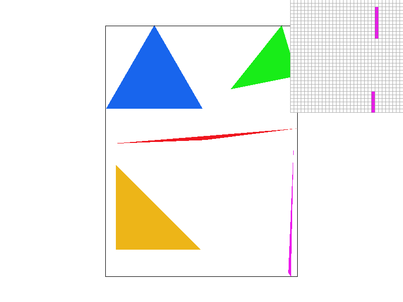
My implementation takes advantage of a significant efficiency improvement by using a marching edge check for our inside condition, instead of computing a full ‘is this pixel inside these three edges’ for every single point in our rectangle bounds.
We start by initially defining our three edges via the x/y rates of change (this allows us to determine how much our later values change as we step in the x/y directions). For the edge running from vertex \(k\) to the next vertex, the edge function is
\[ E_k(x, y) = A_k\,(x - x_k) + B_k\,(y - y_k), \qquad A_k = y_{k+1} - y_k, \qquad B_k = -(x_{k+1} - x_k) \]where \(A_k\) is how much the edge value changes for each step in x, and \(B_k\) is how much it changes for each step in y (the B values are negated for the cross product).
We also calculate the signed 2x area (the first edge's function evaluated at the third vertex) in order to detect which winding order is used. If this value is negative, we negate every A and B value, so that a point is inside the triangle exactly when all three edge values are ≥ 0, regardless of winding order.
We then run our edge functions once, at our initial pixel location (min x value + 0.5, min y value + 0.5), where the min/max x/y values define the triangle's bounding box (floored/ceiled and clamped to the screen).
Then, for our actual checks, we step through each pixel within the bounding box, row by row, calling fill_pixel on each location where all three edge values are ≥ 0.
What this does, is for each inner loop (checking each x value within a y row), we do our edge check and then advance each of the three edge values by its A value (our left to right rate of change). After each y row, we similarly advance the row's starting edge values by their B values (our y rate of change). This allows us to avoid computing a full edge check on each point from scratch, and instead simply increment our values through direct addition at each step. As we can see from the following tests, this provided approximately 3.7x speedup compared to an unoptimized box check (~72% reduction in time). Values show average rasterization loop timing over 100 sequential attempts for each of the 5 triangles in the image:
Full Edge Check per Location in Bounding Box:
[raster] triangle 1 avg_per_run=94562.0 ns [raster] triangle 2 avg_per_run=71838.5 ns [raster] triangle 3 avg_per_run=55848.7 ns [raster] triangle 4 avg_per_run=64781.5 ns [raster] triangle 5 avg_per_run=53120.6 ns
Single Edge Check with Incremental Addition in Bounding Box:
[raster] triangle 1 avg_per_run=24717.0 ns [raster] triangle 2 avg_per_run=18791.0 ns [raster] triangle 3 avg_per_run=16069.0 ns [raster] triangle 4 avg_per_run=18138.2 ns [raster] triangle 5 avg_per_run=14829.6 ns
Task 2: Antialiasing by Supersampling
In order to implement supersampling for our triangle rasterization, we need to adjust a few secondary components and data structures to support our non 1:1 sample_buffer:frame_buffer relationship:
1. Sizing the sample buffer when the sample rate changes (set_sample_rate)
In order to provide adequate sample_buffer vector space, we resize the buffer to width × height × sample rate entries, initialized to white. Including the sample rate ensures our buffer is scaled relative to the number of samples we are taking per pixel location.
2. Sizing the sample buffer when the framebuffer changes (set_framebuffer_target)
Similarly, we resize the sample buffer to width × height × sample rate whenever the framebuffer target is set. While similar in format, this resize is to account for the new width/height, not a change in the sample rate.
3. Writing samples (fill_pixel and fill_supersample)
In order to support our new supersampled triangles alongside our existing line/point rasterizations, I decided to define an additional fill_supersample function. The samples for each pixel are stored next to each other: the samples for pixel (x, y) begin at index (y × width + x) × sample rate. Both functions ignore locations outside the screen.
Both functions are designed to fill a sample_buffer scaled to the current sample_rate, with the fill_pixel function filling all sample locations with the single sample color provided, and the fill_supersample function filling only the single current supersample index s that is provided.
4. Resolving samples to the framebuffer (resolve_to_framebuffer)
Because our two buffers are no longer guaranteed to be equal in size, we need to ensure that our output pixel values are defined by the resulting value from our set of super samples per pixel. Walking through the function:
- We retain the same x,y nested loops over every output pixel, since the resulting framebuffer target count will always be equal to width * height.
- At each pixel, we default the outgoing value to black, as this gives us a zeroed initial RGB value, which we will increment based on our collected super samples.
- At each outgoing pixel location, we define the resulting RGB value as the sum of the super samples stored for that pixel. This gives us the total resulting value of all super sampled sub-pixel RGB values (plus the skipped sub-pixel locations, which have a default value of White).
- We finally adjust our final RGB value to the average value across the sample_rate total samples, giving us a more accurate approximation of our pixels intended value.
- We keep the final step the same, where the averaged r, g, b values are scaled to the 0–255 range and written to the framebuffer.
Supersampled triangle rasterization
For the core rasterize_triangle function, we keep the same bounding box, edge coefficients, and winding-order handling as in our original function, and add two nested sub-sample loops inside each pixel.
We define an integer ss_dim to be the square root of our provided sample rate, which serves as the number of rows and columns we will sample per pixel. We also use its inverse, 1/ss_dim, to compute the appropriate subsample starting location: the first sample is placed at (min x + 0.5/ss_dim, min y + 0.5/ss_dim), so each pixel's samples sit at the centers of an ss_dim × ss_dim grid of sub-cells. The starting edge values are evaluated at that point.
The nested loops iterate through the following:
- Each ‘py’ value between our smallest and largest y-value pixel locations
- Each ‘px’ value between our smallest and largest x-value pixel locations
- Each ‘j’ value between zero and our pre-defined sample column/row count
- Each ‘i’ value between zero and our pre-defined sample column/row count
The loop will effectively check every valid pixel location within our bounding box, and iterate through each of the i * j subsamples contained within it. We retain the same marching edge check method as before, but due to our sub-pixel sample locations, we need to include additional partial step increments:
- For each full pixel Y step (move 1 row): the edge values advance by B.
- For each full pixel X step (move 1 column/right): the edge values advance by A.
The above are the same as before. But now:
- For each j step (1/ss_dim – partial pixel y row): the edge values advance by B × 1/ss_dim.
- For each i step (1/ss_dim – partial pixel x column): if all three edge values are ≥ 0, we fill supersample index j × ss_dim + i of the current pixel; then the edge values advance by A × 1/ss_dim.
We increment our edge values in these inner steps by a scaled Ai/Bi value using the inv partial step value calculated earlier to ensure we only increment by the sub-step amount. For any location found to be inside, we call our fill_supersample function with the appropriate X/Y coordinates and sub pixel location.
The overall result of this supersampling method is that we can now provide partial pixel colorings for pixel locations where the center point (px + 0.5, py + 0.5) is not actually contained within the triangle directly, but some of it’s super samples are. This enables us to draw ‘transitional’ pixel locations with partial color values to minimize the jagged edges otherwise seen due to the grid format of our pixels, as demonstrated below (1x, 4x, 16x SS)
|
|
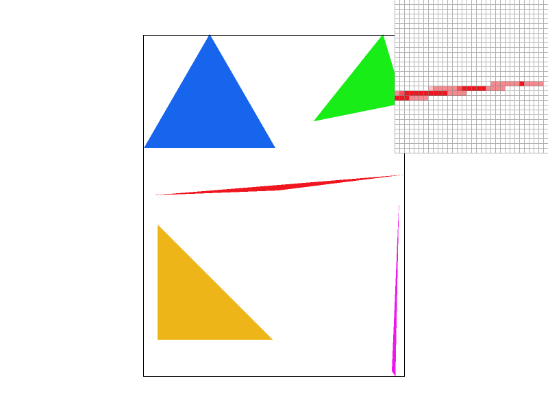 |
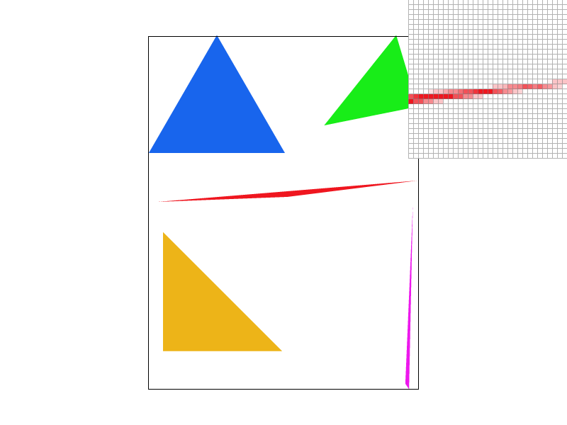 |
Task 3: Transforms
The transformations are implemented directly using the well-known transform matrices discussed in class (rotation angles are given in degrees and converted to radians):
\[ T(d_x, d_y) = \begin{bmatrix} 1 & 0 & d_x \\ 0 & 1 & d_y \\ 0 & 0 & 1 \end{bmatrix}, \qquad S(s_x, s_y) = \begin{bmatrix} s_x & 0 & 0 \\ 0 & s_y & 0 \\ 0 & 0 & 1 \end{bmatrix}, \qquad R(\theta) = \begin{bmatrix} \cos\theta & -\sin\theta & 0 \\ \sin\theta & \cos\theta & 0 \\ 0 & 0 & 1 \end{bmatrix} \]I included additional GUI functionality using these same matrix transformations that allows us to now support viewport translation (left/right/up/down) via arrow key inputs, as well as rotation (clockwise & counterclockwise) that rotates via the center of the display viewport window. The scale functionality is already provided through the mouse wheel scroll up/down inputs.
These transformations were used to create the following renderings (the my_robot.svg):
|
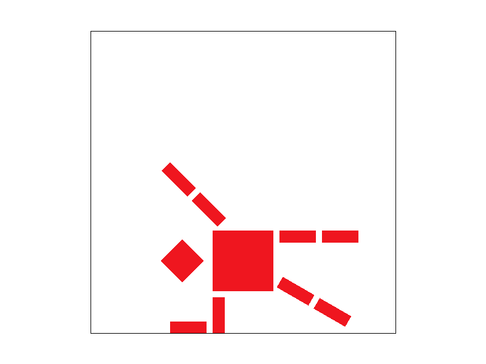 |
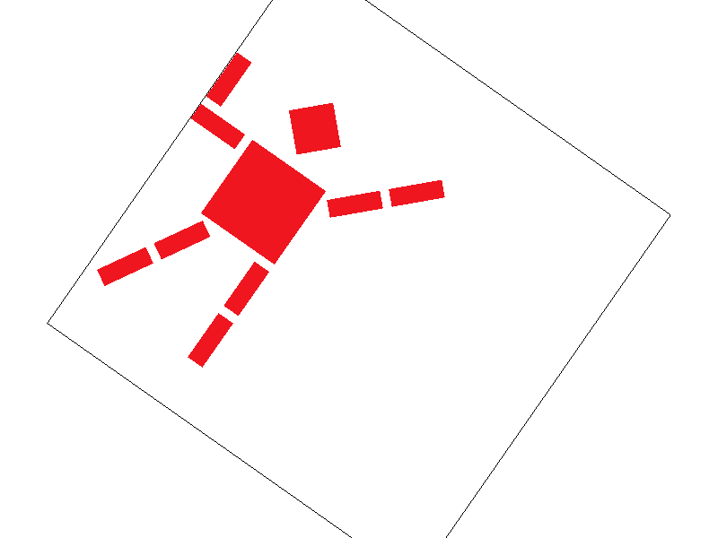 |
The robot has been adjusted to now be performing an exercise pose akin to a sideways plank!
Task 4: Barycentric coordinates
Barycentric coordinates offer a very flexible attribute for a given point in space relative to a containing triangle. The three Barycentric coordinates provide us with three ‘weight’ values for the three vertices of the triangle signifying how close our point is to each. Another way of visualizing/expressing this that I find a bit more intuitive is our vertex ‘weights’ are equal to the proportion of the sub triangle defined by our point and the triangle edge opposite of our given vertex to the area of the complete triangle. For example:
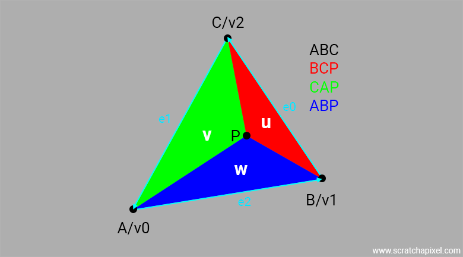
Our ‘C’ weight for point P is equal to the area of triangle ABP / area of triangle ABC. In practice, this allows us to proportionally apply vertex values to our pixel such as color, textures, coordinates etc. We can see this in practice with the example shown below (right), where I defined a triangle with each vertex having a solid value of RED, GREEN, or BLUE. Using Barycentric coordinates, we are able to interpolate the relative color of each pixel contained within based on its relative location to each of the three RGB values. We can see a similar result in test 7 (left):

|
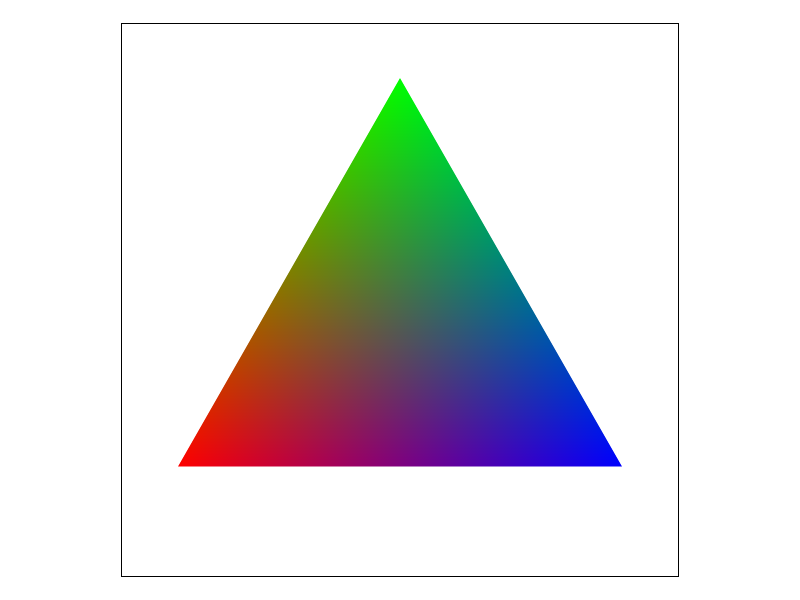 |
Task 5: "Pixel sampling" for texture mapping
In this section we implement two different forms of pixel-based sampling to map our texture data onto the screen. Both methods use a similar mechanism where each screen sample (sx, sy) is converted into barycentric weights relative to the triangle's three vertices. These weights are then used to interpolate the per-vertex texture coordinates into a single (u, v) in normalized [0,1] texture space, which is passed to the sampling methods. At this point, our sampling methods change depending on what sample style we are using:
Nearest Neighbor:
The nearest neighbor method is straightforward. We first floor our scaled u,v coordinates (since texels are addressed by integer grid coordinates), and then run a quick min/max check to ensure our resulting coordinates are valid for our given width/height. At this point, we simply return our resulting RGB values for the given texel location.
Bilinear Interpolation:
For this method, we first need to define a few helper functions, since we will be accessing multiple surrounding texel values:
- The lerp function returns the linear interpolation between values a and b (our two texel R/G/B values) with an offset of w from a (our x/y-offset from the initial texel our sample lands in).
- The clampX/clampY functions are created to ensure that for our four get_texel calls, we only retrieve from valid texel coordinates. In the event of an initial sample sitting near a texture border, we simply interpolate between a duplicated set of texels.
We initially define our fx and fy values as our scaled u,v values with a 0.5f negative offset. This offset is important, because it ensures that the four texel locations we select are the four closest to the raw sample location. If the raw value was floored immediately, we would always define our initial texel as the top-left of our four samples, regardless of our relative location within it. By offsetting and then flooring, we automatically account for this.
We define these floored values as our x, y coordinates which we will use to select the four texels at (x, y), (x+1, y), (x, y+1), (x+1, y+1). These texels are bounds checked using our clamp helper functions defined earlier. We also define our s, t values at this point as the difference between our fx/fy and x/y values (our offset from our top-left texel center). These will give us our relative location the fractional distances (in [0,1)) between the four surrounding texel centers.
We finally interpolate our RGB colors by:
- Conduct Linear Interpolation between the top two values using the x-offset
- Conduct Linear Interpolation between the bottom two values using the x-offset
- Conduct Linear Interpolation between the above two calculations using the y-offset
Rasterization
We then return the result to our rasterization function, which loops over each pixel in the triangle's bounding box and each of its ss_dim × ss_dim supersamples. Each supersample's screen position is the center of its sub-cell: (px + (i + 0.5)/ss_dim, py + (j + 0.5)/ss_dim).
Within each inner loop, we compute the barycentric coordinates for our current sx, sy screen location relative to the 3 triangle vertices. As long as we are contained inside (or along an edge), we compute our three weights and use them to generate our SampleParams p_uv Vector (the effective uv coordinates for our texture space). We do a check against which pixel sampling method is defined and call the associated sample function. We use the output as our stored sample buffer RGB value.
The two methods defined here for pixel sampling offer varying degrees of rendered detail. Below we can see the effect of Nearest at 1x and 16x SS (left) and Bilinear at 1x and 16x SS (right) under minified conditions. We can see the difference especially well at the 1x SS, where Nearest has lost a significant amount of detail in the fine lines, leaving choppy curves and gaps. A similar effect can be seen at 16x SS to a lesser degree, with Bilinear offering smoother curves and color gradients.
|
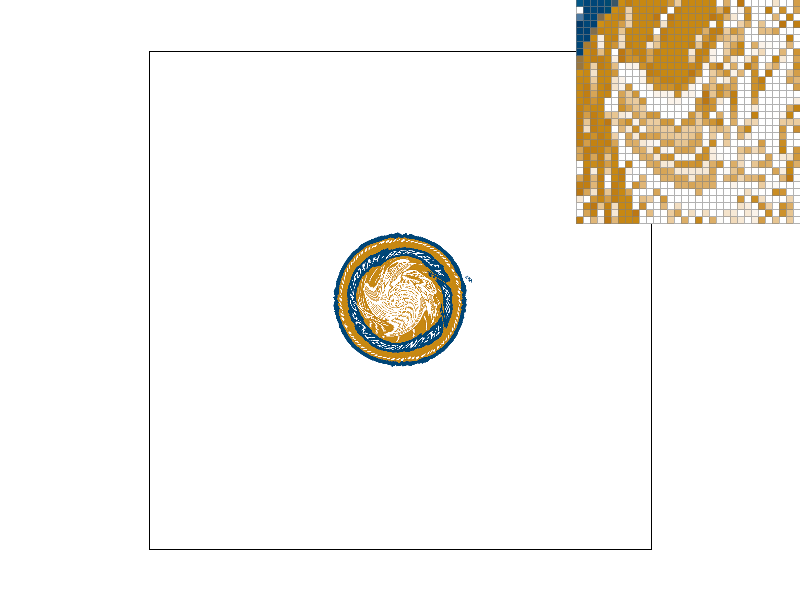 |
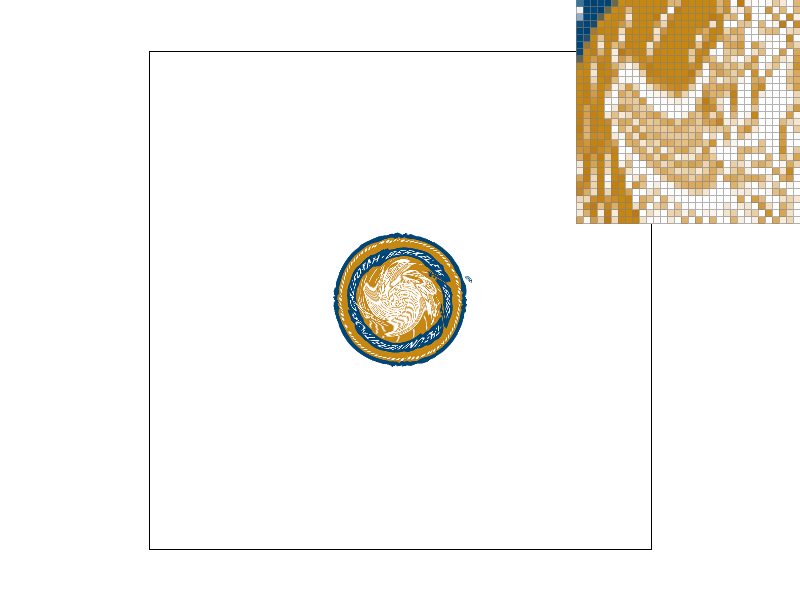 |
|
|
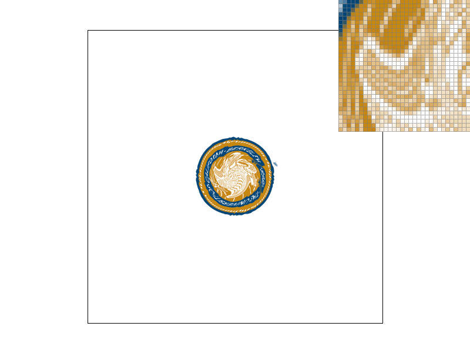 |
The difference is especially clear when we look at the smoothing capability under magnified conditions (Nearest left, Linear right, both 1x SS (no meaningful change under supersampling due to a lack of additional texels to sample)):
|
|
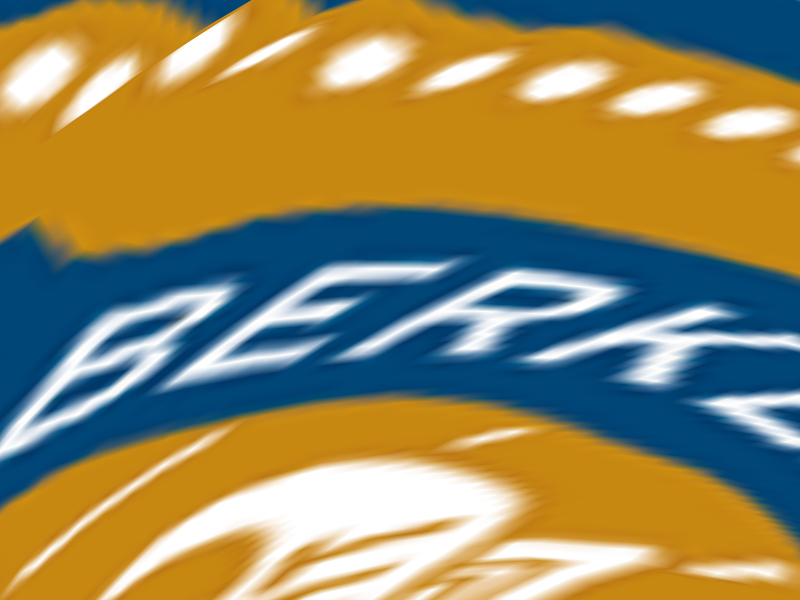 |
Task 6: "Level Sampling" with mipmaps for texture mapping
Level sampling allows us to significantly improve on the ability to prevent aliasing without needing to rely on supersampling our native texture resolution. This is accomplished by the presence of pre-computed half-resolution copies of our texture. By using these lower resolution ‘mips’, we can more accurately represent our native texture at low resolution by sampling at a closer to 1:1 texel:pixel ratio.
This is accomplished through a few steps. We first need to identify what ‘mip level’ to utilize. For each supersample inside the triangle, in addition to the uv coordinates at the sample itself, our rasterization loop conducts a series of calculations:
- Barycentric coordinates one pixel over: These values are the barycentric values from the screen locations 1 pixel further in both x and y coordinates from our current screen location
- uv coordinates one pixel over: These values are our resulting uv coordinates for the two computed barycentric coordinates above
- uv differentials (p_dx_uv, p_dy_uv): These define the relative distance in u,v coordinates between our current sample location, and the following pixel location in x,y directions. These values allow us to understand how much u,v increments between each one-pixel step on screen.
These values are passed to our sample function along with the selected pixel and level sampling methods. Every level lookup goes through a helper that first clamps the requested level to the valid range (0 up to the highest available mip level), then samples that level with bilinear interpolation for P_LINEAR or nearest neighbor for P_NEAREST.
In each case (other than default/level zero), we call get_level, which scales the uv differentials by the texture's width \(W\) and height \(H\) to measure them in texels:
\[ L = \max\Big( \big\| (\Delta u_x W,\ \Delta v_x H) \big\|,\ \big\| (\Delta u_y W,\ \Delta v_y H) \big\| \Big), \qquad D = \log_2 \max(L, 1) \]This function is responsible for converting our dx and dy values into an actual texels-per-pixel rate. We define our resulting level based on the maximum between the two lengths (norms) of these values to ensure we choose the most compressed texel-per-pixel rate to avoid under-filtering. Our final level is defined as the log base 2 of max(L, 1), which keeps the level at 0 or above; the clamp in our level lookup helper then ensures we do not pick an out of bounds mip level.
How we use this value will depend on what level sampling method we are using:
- For zero (L_ZERO), we naturally use our native resolution only: we always sample level 0.
- For Nearest (L_NEAREST), we simply round our level value to the nearest integer and sample that level.
- For Linear (L_LINEAR), we sample at the two containing levels, and blend at the appropriate relative ratio of each based on the distance to each level: with lower level \(\lfloor D \rfloor\) and weight \(w = D - \lfloor D \rfloor\), the result is \((1 - w)\) times the lower level's sample plus \(w\) times the next level's sample.
With all Level Sampling and Pixel Sampling methods implemented with optional super sampling, we have a large range of combinations to choose from, with varying benefits and drawbacks. Pixel Sampling enables us to handle texture magnification, while level sampling enables us to handle texture minification. Supersampling (while the most memory intensive due to the scaled sample buffer) allows us to extract the most amount of detail from a given sample space.
Pixel Sampling (Nearest and Linear):
Speed: Linear always samples 4 texels and nearest 1, regardless of how texture is scaled in/out.
Memory: No changes to memory consumption – sample buffer/texture static
Antialiasing Power: Linear allows us to handle the ‘blocky’ look that appears under magnified textures, but neither option helps in the case of minification (always samples nearest 1 or 4 regardless of number of texels per pixel) so we cannot fix shimmering/moire
Level Sampling (Zero/Nearest/Linear):
Speed: No cost for L_ZERO, L_NEAREST adds a set amount of additional computation per sample (the barycentric/uv/vector length/log computations), and the linear does a blend of two levels giving 2x the texel reads of L_NEAREST
Memory: Since we need to store the ½ size texture levels, we end up requiring an additional ~33% storage (¼ + 1/16 + ...)
Antialiasing Power: This sampling is very effective for minification scenarios. Because we can pre-average our original high-texel count into a smaller set of averaged texels, when the texture is minified we can sample based off of those, preventing us from losing out on the texel data from additional texels within our single pixel location.
Supersampling:
Speed: Work increases linearly as supersample level goes up (4x, 9x, 16x)
Memory: Memory usage also increases linearly as our supersample level goes up, since we need to allocate the additional sample buffer locations.
Antialiasing Power: Very effective at smoothing geometric curves (only one of the three that can achieve this), and is additionally effective with minification due to the higher rate of sampling allowing us to catch the texels that are typically missed without the use of level sampling.
We can see these various benefits in action on the below examples. The photo selected was a high resolution image of a skyscraper, with very tight rows of windows that is typically difficult to see if not viewed at native or higher resolution, and can cause the moire pattern as shown. When we attempt to apply our two Pixel Sampling methods, we can see that there is little success with resolving our aliasing issues with minification (L_ZERO/P_NEAREST, L_ZERO/P_LINEAR)
|
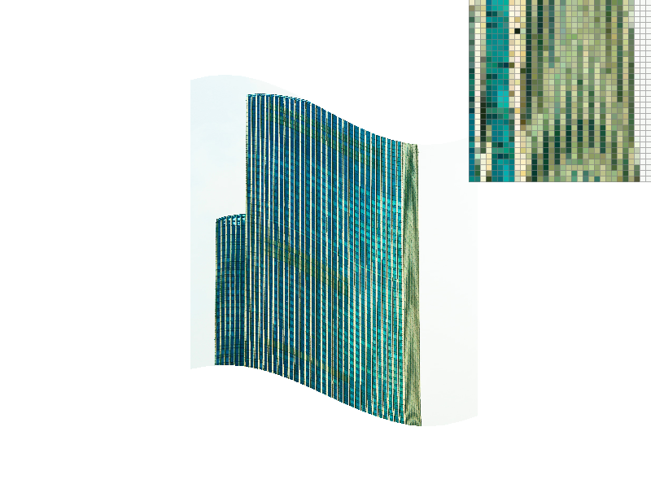 |
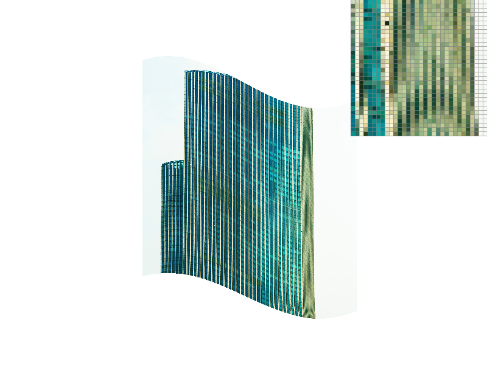 |
However, if we zoom very close in, we can see the success achieved using the linear pixel sampling (P_NEAREST left vs P_LINEAR right):
|
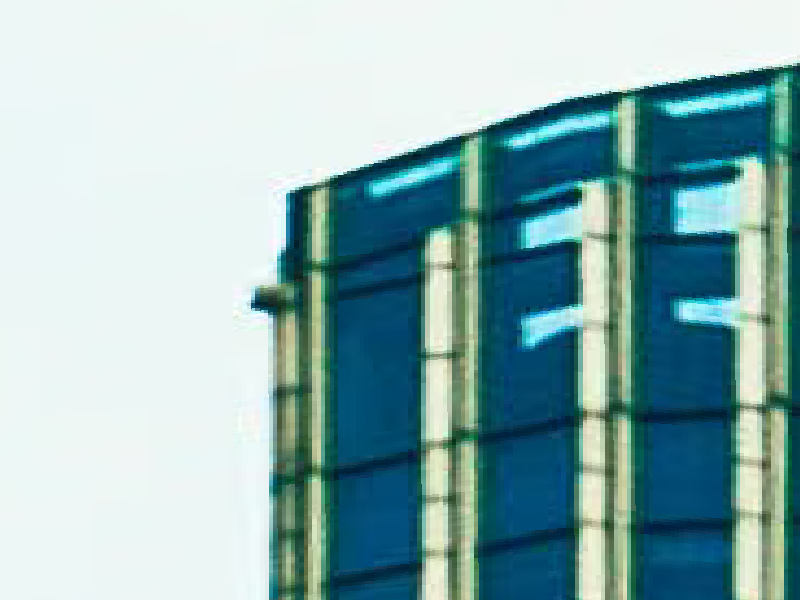 |
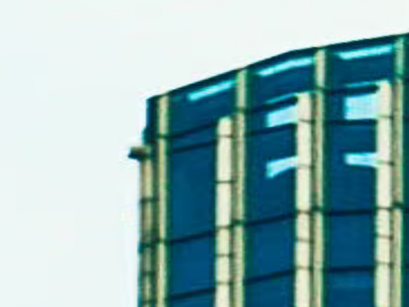 |
Once we include L_NEAREST, the Moire pattern from before is immediately reduced. It’s also worth noting that when we use P_LINEAR instead of P_NEAREST, we lose a bit of the sharp contrast that the vertical pillars originally displayed, due to the ‘softening’ effect of the color averaging but we gain a much smoother outline (L_NEAREST/P_NEAREST left, L_NEAREST/P_LINEAR right):
|
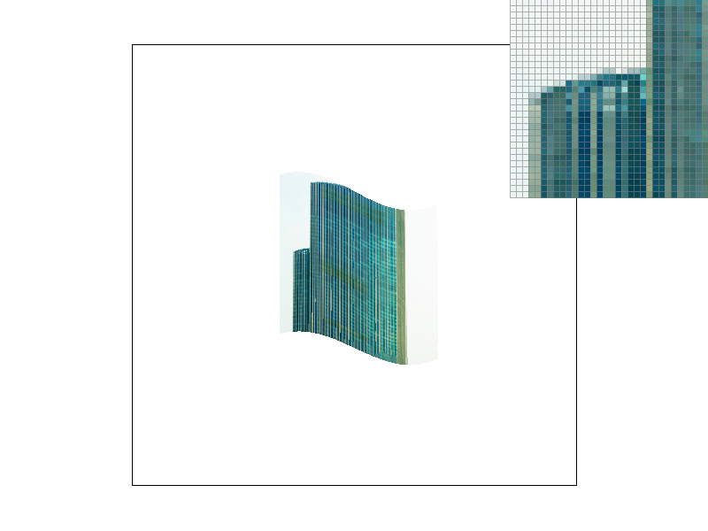 |

|
When we compare the effect of using both L_ZERO and P_NEAREST, but with 16x SS we can see how effective it can be for the same task (unfortunately at the cost of nearly 2x the active memory):
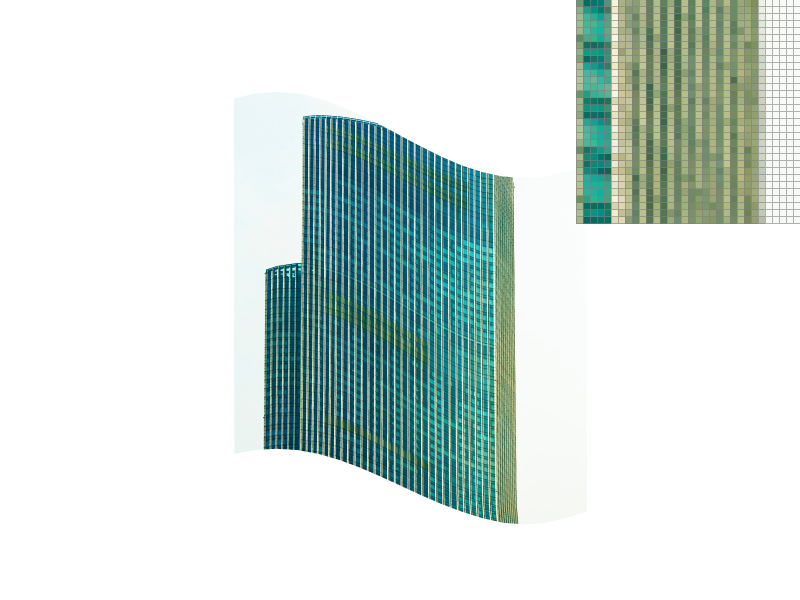